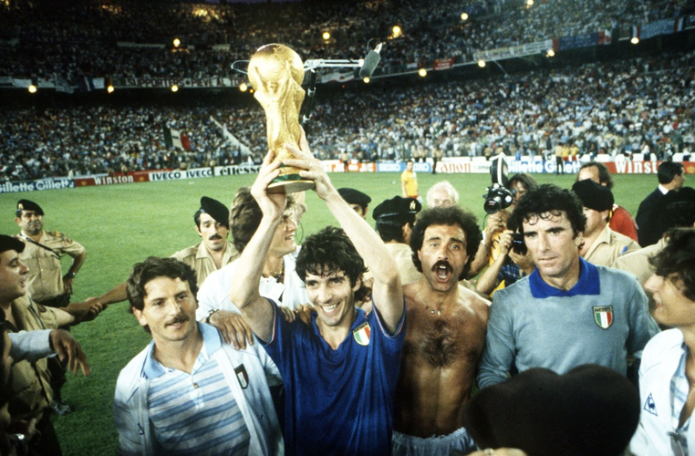

Mundial 1982
Tercero título mundial
La aventura española en el mundo de 1982 comienza en Vigo entrenó el Nacional de Enzo Bearzot se encuentra en un grupo aparentemente sin trampas -., Junto con Polonia, Perú y Camerún desde el que sale con tres empates y una gran controversia. Sólo la diferencia de goles califica a los Blues a la siguiente ronda a expensas del Camerún sorprendente e invicta.
El clima no es clara, debido a las difíciles relaciones con los periodistas, hasta el punto que los Azzurri tomar una decisión sin precedentes: el silencio stampa.Dal fría de Vigo para el calor abrasador de Barcelona: Italia debe ahora enfrentarse a los campeones mundo saliente, Argentina y los grandes favoritos, Brasil. Sobre el papel es un reto sin esperanza.
El partido contra los argentinos en lugar marca el comienzo del renacimiento azul. El equipo de Passarella se cancela por niños Bearzot: Estimado parada Maradona, Tardelli y Cabrini empujar la puerta de Fillol. Argentina está de rodillas. Pero Brasil contra los argentinos que anotó un gol más, así que todo lo que necesita un sorteo de las semifinales. El encuentro entre Italia y Brasil en julio leggenda. 5, el estadio de Sarriá en Barcelona, 17.15. Italia comienza inmediatamente hacia adelante. El quinto minuto Conti sirve Cabrini, cruzar a la zona de cabecera de Rossi pone en la portería defendida por un miedo Valdir Peres. Sócrates igualó siete minutos más tarde. Pero Italia no perdió el ánimo y en el 25 'de nuevo sigue adelante con Rossi.A unos veinte minutos del final Falcao, con la energía de la desesperación, que igualó el marcador. Parece el final y en su lugar, unos minutos más tarde, el renacer insulto Pablito el puerto brasileño. Es el triunfo. Sin embargo, todavía hay espacio para las emociones. Después de una red de Antognoni injustamente cancelada en el último minuto Oscar cabeza de trituración en la puerta azul. es la última ilusión de "verdeouro" creen que han igualado y alegrémonos, pero Zoff, que bloquea en la línea, les recuerda que la vida comienza a los cuarenta.
Italia está en las semifinales y se encuentra Polonia lado, sin embargo, privado de Boniek, descalificado. Es una formalidad: Rossi anotó dos redes impresionantes y azul volando en la final, donde se espera una Alemania Occidental agotada por la increíble victoria semifinal último penal contra Francia Platini. Domingo por, 11 de julio de 1982 el estadio Santiago Bernabéu de Madrid, a los 20. El mundo entero está dispuesta a ayudar al triunfo de Italia. Incluso el Presidente de la República Sandro Pertini se precipita en las gradas en el lado del Rey de España Juan Carlos. Cabrini falló un penalti en la primera mitad. Pero en la segunda Italia rampante. Falta enésima Oriali parte del castigo que se pone la pelota en el área alemana. Se sumergen en muchos, pero sólo uno toca el balón enviándolo en la red: la de Rossi. Es una meta maravillosa. Poco después, una acción que sale directamente desde los brazos de Zoff y que se llevan a cabo por Scirea Bergomi y Rossi hasta que el alemán, el balón llega a usted con un irresistible Tardelli diagonalmente perfora Schumacher. El famoso grito que sigue es liberadora todo el país. Después de una épica dirigida por Conti en la banda derecha también Altobelli puso el sello en el partido. Los alemanes todavía tienen tiempo para marcar el gol de la marca con Breitner. Luego, el fin y el delirio: silbato del árbitro Coelho e Italia es campeona del mundo, como se ha subrayado tres veces, con la voz entrecortada por la emoción, el comentarista Nando Martellini. Rossi se capocanoniere el Mundial. El capitán Zoff la tarea de levantar la primera Copa de la FIFA. Pero el triunfo de todo el equipo y su entrenador Enzo Bearzot.